17 面部中三分之一：鼻部丰容
面部中段鼻部提升
STEVEN DAYAN, THUY-VAN TINA HO AND JANI VAN LOGHEM
17.1 引言
鼻子是面部重要的组成部分，对男性吸引力有贡献。尽管鼻部提升的价值显而易见，但报道了使用填充剂进行鼻部提升后出现严重不良事件（SAEs），例如坏死和视力丧失，这些并发症继发于血管内注射 [1]。可以通过将羟基磷灰石钙（CaHA）注入鼻背的真皮层浅平面（sub-SMAS plane），即低于通常与此类 SAEs 相关的血管水平，来改善鼻部形态（图 17.1 和图 17.2）[2]。为改善鼻外观，常规会在鼻根前角、鼻唇角和超鼻尖区域，以及背部不规则的区域进行填充剂注射（图 17.3）。
理想的注射器械是直径为 22G 或更粗的钝性套管针，以降低意外向鼻动脉及其分支内注射的几率。需要注意的是，关于非手术鼻形成术最安全的制剂沉积技术，目前在钝性套管针和锐针之间仍存在争议 [3]。操作者在进行此操作前应接受有关鼻部解剖学和产品用量的教育 [4]。使用多个入点进行预充填和水刀分离（hydrodissection），并采用非肾上腺素化的 1–2% 利多卡因，可以进一步降低血管内注射的风险。为更精确地控制 CaHA 的用量，可以将原注射器的内容物通过母口到母口的 Luerlock 连接器转移到一次性 1 mL Luer-lock 注射器中。考虑到 CaHA 的塑形能力是鼻部提升的重要考虑因素；全粘度产品无需预混利多卡因即可使用。这可以降低“头像鼻”（Avatar nose）畸形的风险，即低粘度产品可能迁移到鼻侧面。
17.2 男性鼻部提升，钝性套管针技术（四点钝性套管针技术）
注射点位参考图 17.4
17.2.1 分步技术
-
在中线标记背驼峰，并使用 20G 锐针在入点处建立一个通道（图 17.4 中的 1）。
-
将连接有 1% 利多卡因的注射器和钝性套管针置入该通道，沿 SMAS 向骨膜推进。充填约 0.3 mL 以进行水刀分离并为 CaHA 产品创造空间（图 17.5）。
-
在鼻根前角处使用 20G 锐针建立第二个通道（图 17.4 中的 2）。
-
将钝性套管针垂直于皮肤，朝向骨膜推进，并充填约 0.2 mL 的 1% 利多卡因，使套管针尖接触到骨膜。用非惯用手的拇指和食指对鼻根施加侧向压力，以防止充填剂侧向扩散（图 17.6）。
-
在鼻翼基部使用 20G 针建立第三个通道（图 17.4 中的 3）。
-
将钝性套管针更深地推进至鼻翼基部，并注射约 0.2 mL 的 1% 利多卡因以在组织中创造空间（图 17.7）。
-
在鼻尖处使用 20G 针建立第四个通道（图 17.4 中的 4）。
-
将制剂从利多卡因切换到含有未稀释 CaHA 的注射器，并使用一次性 1 mL 注射器以获得最大粘度，从而实现更精确的控制。
-
通过鼻尖通道进入，将钝性套管针向下推进至鼻翼基部，并从鼻翼基部朝向鼻尖进行逆行注射（图 17.8）。此技术应能改善鼻唇角。
-
通过鼻根前角的通道进入。使钝性套管针尖接触骨膜，注射约 0.2–0.3 mL 的 CaHA，直到鼻根前角得到满意矫正（图 17.9）。
17.3 鼻部提升，钝性套管针技术（单点钝性套管针技术）
注射点位参考图 17.10
17.3.1 分步技术
-
标记眉上线，并确定需要提升的鼻根前角、超鼻尖角和鼻唇角的区域。此技术可用于背驼峰轻微或无背驼峰的患者。
-
在用 23G 针在预孔处操作之前，考虑对鼻尖进行麻醉。
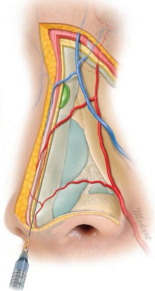
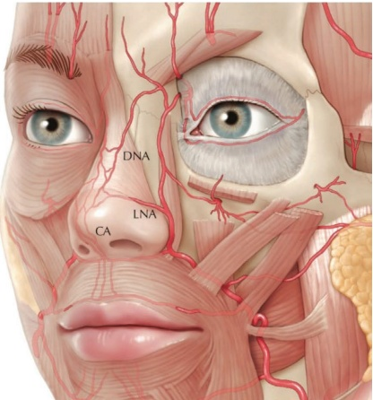
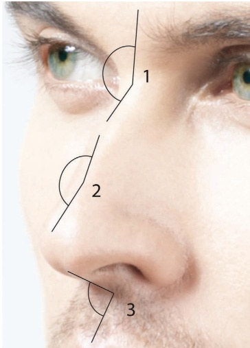
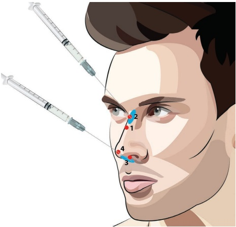
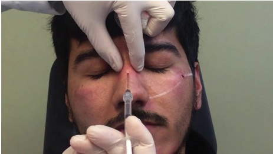
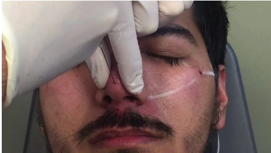
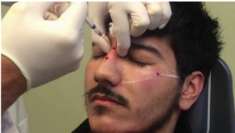
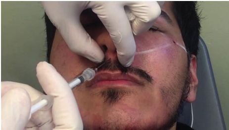
-
使用未稀释的 CaHA 和 25G、38 mm 的钝性套管针。
-
引入钝性套管针，并将其通过 SMAS 推进至鼻尖的软骨膜（Figure 17.11）。
-
用非惯用手抬提皮肤，以便平稳地将钝性套管针沿鼻骨的软骨膜和骨膜向上推进。
-
将钝性套管针操作至皱眉肌起点处，并确保钝性套管针位于鼻额角（nasofrontal angle）的骨膜上。
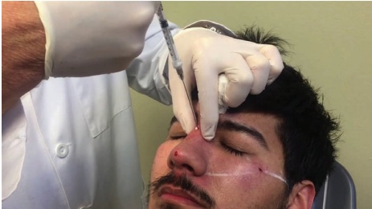
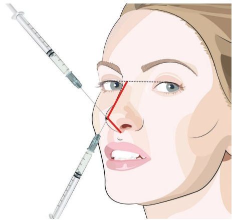
104 羟基磷灰石钙（CaHA）软组织填充剂
-
将非惯用手的拇指和食指置于上眶切迹处，并按压至骨骼，以暂时减缓血流（图 17.12）。
-
注射少量 CaHA（作者建议每个沉积点或逆行注射 0.025 mL，以最大程度降低失明风险）。
-
回撤至上提角度，并在真皮层下放置额外沉积物。
-
检查并塑形（图 17.13）。如有必要，重复上述步骤。
-
此时将钝性套管针向下移动至鼻唇角。
-
向角部推进至筋膜下层。
-
注射少量 CaHA（作者建议每个沉积点或逆行注射 0.025 mL，以最大程度降低风险）。
有关男性和应用技术的术前和术后结果，请参阅图 17.14。
17.4 术后护理
注射后，鼻部可能会出现短暂的肿胀或瘀伤。应告知患者，任何肿胀或瘀伤可能持续长达三天，且是暂时的。治疗后的晚上可外敷冰袋，以帮助减轻肿胀和瘀伤。患者在接下来的两周内不应佩戴任何可能接触到治疗区域（例如鼻额角）的眼镜。
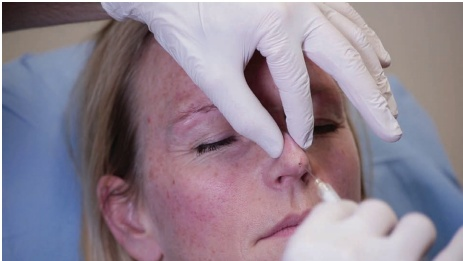
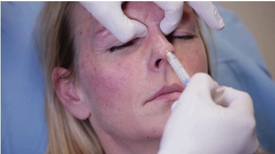
在治疗区域（例如鼻额角）至少两周。应告知患者，术后两小时内不要用不洁的手触摸任何注射点位。
17.5 实现最佳效果的附加治疗
鼻部常见的皮肤问题，如可见毛孔、血管和色素沉着斑点，可以通过其他治疗方式进行处理，包括化学焕肤、激光和微晶磨皮。
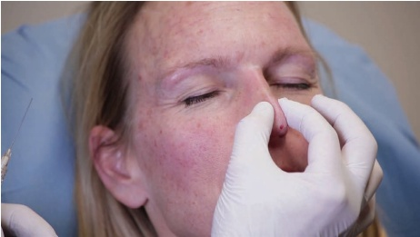
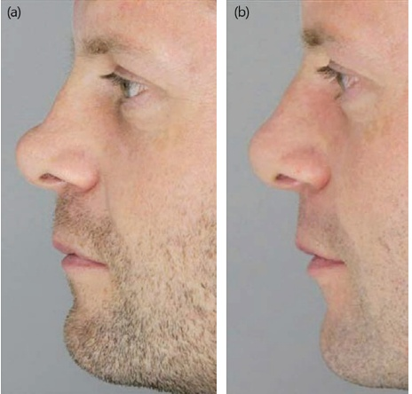
参考文献
[1] J. A. J. van Loghem et al., “Cannula versus sharp needle for placement of soft tissue fillers: An observational cadaver study,” Aesthet Surg J, vol. 38, no. 1, pp. 73–88, Dec. 2017.
[2] C. Delorenzi, “Complications of injectable fillers, part 2: Vascular complications,” Aesthet Surg J, vol. 34, no. 4, pp. 584–600, 2014.
[3] G. S. Jung et al., “A safer non-surgical filler augmentation rhinoplasty based on the anatomy of the nose,” Aesthetic Plast Surg, vol. 43, no. 2, pp. 447–452, Apr. 2019.
[4] F. Rosengaus, A. Nikolis, “Cannula versus needle in medical rhinoplasty: The nose knows,” J Cosmet Dermatol, vol. 19, no. 12, pp. 3222–3228, Dec. 2020.
[5] H.-J. Kim et al., “Clinical anatomy of the face for filler and botulinum toxin injection,” in: Clinical Anatomy of the Face for Filler and Botulinum Toxin Injection. Springer, 2016.